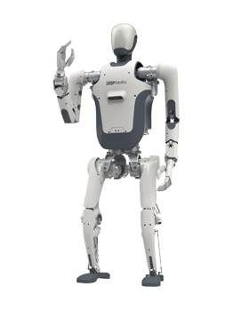

DR01
A humanoid robot from China, announced 2024.
Sources retrieved: 23 October 2026 (A)
- Applications
- Intended use, per the manufacturer
- Leveraging the DR01 humanoid robot platform for artificial intelligence and big data training will drive the iteration and advancement of embodied intelligence technology, explore applications in the humanoid robot industry, and improve human industrial productivity and quality of life at home.Source and note: Intended use, per the manufacturerA en.deeprobotics.cn/en/index/humanoid.html · Retrieved 23 October 2026
- Indicative price
- Not stated

Manufacturer's own photo.
Specifications
3 of 33 stated 30 not stated
30 fields hidden
How to read the figuresShow guideClose
- not statedNo source
- noStated by a source
- 0Reported as zero
- ASource
- A*Source with a caveat (select it)
- CERecords only what the manufacturer states regarding CE marking.
Select a source marker for source details and notes.
Physical3/14 disclosed
Power0/5 disclosed
Sensing and autonomy0/6 disclosed
Payload and expansion0/3 disclosed
Commercial0/1 disclosed
Compliance & certifications0/4 disclosed
Against the field
Each strip holds every robot of this type in the guide that states the figure, one bar per group of values. Further right means a larger figure, not a better robot. A taller bar means more robots in that group.
Max speed
more than 5.76km/hmore than 3.58mphOur conversion from 1.6 m/s. The manufacturer does not state an imperial figure itself, so the conversion has no source of its own.
106 humanoids state a top speed
DR01 states a lower limit, not one figure, so it is shown open-ended and not ranked against the others. 28 state only a bound (≥ or ≤) and are not ranked.
Notes
DEEP Robotics' own site also lists a separate humanoid product, DR02, distinct from DR01.
The page is a short marketing overview and states no height, weight, degrees of freedom, payload, battery, runtime, sensor, compute, IP rating, price, certification or availability figures at all — only mobility capabilities and the joint-actuator names, even though the producer names DR01 as a real product on its own site.
DR01 is described as equipped with “self-developed J60 lightweight joints and J100 high-torque joints”; these are the producer's own actuator product names.
The page describes DR01 walking over 18cm steps as part of ongoing walking on uneven terrain, not a single discrete obstacle to step over.
DEEP Robotics' news page (26 August 2024, reprinting the South China Morning Post) says DR01 debuted at the 2024 World Robot Conference in Beijing.
Sources
One line per source, not per figure: a source has one retrieval date.
- Aen.deeprobotics.cn/en/index/humanoid.htmlMain source. Retrieved 23 October 2026